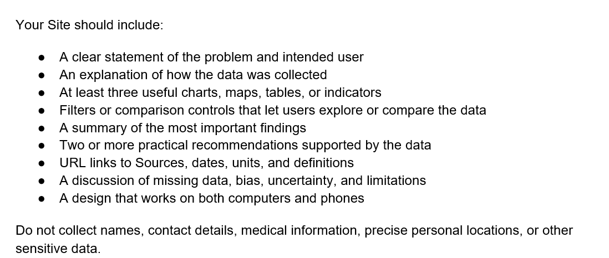

DECISION BRIEF · 2023–2025 PUBLIC DATA · PROVISIONAL SCREENING
Cambridge Road Safety Priorities.
Where should Cambridge begin pedestrian and cyclist safety reviews?
A decision briefing for senior city leaders and transportation decision-makers, using reported crashes from 2023–2025.
THE DECISION SUPPORTED NOW
Arrange on-site reviews at six provisional candidates.
Use the shortlist to direct investigation. Confirm present-day conditions and collect travel volumes before choosing interventions or allocating capital.
Where to investigate next, and which questions to take into the field.
What still needs evidence
Risk per traveler, crash causes, the right intervention and investment priority. Street-segment rankings need defined boundaries and address reconciliation.
Reported crash concentrations, 2023–2025. Results are not adjusted for pedestrian, cyclist, or vehicle volumes.
696eligible reported crashes
438cyclist-involved
260pedestrian-involved
430explicit intersection pairs
266locations to reconcile
Unit: crashes, not people. Two crashes involved both road-user groups, so the categories overlap. Study: January 1, 2023–December 31, 2025 · Source downloads: September 17, 2026.
An intersection review is an on-site road-safety assessment by transportation staff. It identifies conditions to investigate; it does not establish that a location is unsafe or prescribe a redesign. The six study candidates stay fixed. Select one to review evidence, uncertainty and the next investigation. Letter labels are map references, not an additional ranking.
01 / EXPLORE THE DATA
Patterns worth investigating
4 evidence views
How the filters affect each view
Scope: year and road-user filters affect the map, ranking and heatmap. Intersection selection filters the map and heatmap; the map display toggle only changes which matched locations are drawn; ranking remains a comparison across intersections. Annual trends retain all three years and all three series, using only the intersection selection. Overview and published shortlist remain fixed. Injury counts are shown only in the unfiltered, three-year shortlist.
VIEW 01 / WHERE
Reported crash concentrations
Start with the review candidates; switch to all verified intersections for context. Select a circle or a named candidate to inspect the evidence.
Drag to pan or use the keyboard arrow keys while the map is focused. Use + / − to zoom. Letters identify fixed study candidates; circles stay at their verified road locations.
Public road locations, not incident positions. Only unique normalized street-pair matches to official Cambridge GIS nodes are mapped. Coordinate source · Street basemap source · Retrieved September 19, 2026. Injury detail is restricted to the fixed shortlist below.
Accessible map and unresolved-location table
VIEW 02 / COMPARE
Reported crash counts at explicitly identified intersections
Unit: eligible crashes
Equal counts retain tied competition ranks. Display ties retain the original study table order (three-year injury count, then alphabetical order); filtered ties retain that same fixed order. Injury details are withheld from filtered comparisons; the fixed shortlist has a separate aggregate injury column. Address-only and non-public or address-like pairs are withheld from the location comparison.
Accessible comparison table
VIEW 03 / WHEN
Day of week × hour of day
Cambridge local time · Hour beginning · Unit: crashes
Select any cell to read its exact count.
This shows when crashes were reported to have occurred. It does not measure risk per trip or establish recommended site-visit hours. No individual dates or injury details are shown.
Accessible weekday and hour count table
VIEW 04 / OVER TIME
Annual road-user involvement
Three complete calendar years · Unit: crashes
All eligibleCyclist-involvedPedestrian-involved
Categories overlap and are not stacked. Counts alone cannot establish changes in risk, causes, or the effectiveness of street improvements. This view retains all years and modes for comparison.
Accessible annual counts table
02 / PRIORITY LOCATIONS
Compare the six study candidates
A fixed study shortlist, not a definitive ranking of dangerous streets. All three locations tied at six crashes are retained. These summaries are never changed by exploratory filters.
Any injury = a crash with at least one injured person of any travel mode. It does not establish that the pedestrian or cyclist was injured, and it is not an injury-severity measure. Only broad three-year injury counts for these six locations are published; no injury breakdown by year, hour or mode is available.
03 / RECOMMENDED ACTIONS
Act on the evidence. Resolve the unknowns.
SUPPORTED NOW
Commission focused field safety reviews
Begin with the six shortlisted intersections, which together account for 42 reported crashes. Investigate crossing conditions, visibility, turning movements and walking/cycling continuity. These are questions to test, not established causes.
Use each location’s annual pattern to guide review: persistent recurrence differs from a concentration in earlier years.
BEFORE CAPITAL ALLOCATION
Improve location and exposure evidence
Reconcile the 266 records without explicit pairs and unresolved GIS matches. Collect pedestrian, cyclist and vehicle volumes before comparing risk per trip or setting final investment priorities.
Check recent street changes and planned projects; they have not been reviewed here. Define segment boundaries before considering segment rankings. Do not infer costs, lives saved or expected reductions from these counts.
04 / METHODOLOGY & LIMITATIONS
Transparent evidence, bounded conclusions
Cambridge public crash portal → Downloaded September 17, 2026 → Filtered and normalized, 2023–2025
How the analysis was prepared
The CPD Crash Log is the counting source. Records from January 1, 2023 through December 31, 2025 were retained when the cyclist count or pedestrian count was greater than zero. Each eligible source row contributes once to combined totals; timestamps are not unique identifiers.
The detailed dataset is a cross-check only. The original sources overlap and were not appended. The intersection file aggregates the filtered records and is not an independent dataset to add.
Street labels were trimmed, uppercased, stripped of punctuation and normalized for common suffixes, MASS AVE and MT AUBURN. Two distinct, nonempty street names were alphabetically paired. Missing suffixes and ambiguous locations were not guessed.
Definitions and observation window
Eligible crash: a reported crash involving at least one pedestrian or cyclist. Intersection: two explicit normalized street names. Count: number of crashes, not number of people. Study window: all 36 months of 2023–2025; the window does not move with today’s date.
What these data cannot tell us
All 36 months are represented, but reporting may be incomplete. Unreported crashes and near misses are absent; reporting bias may vary by location or road user.
266 eligible crashes (38.2%) lack explicit intersection pairs. Normalization cannot resolve every spelling variation or ambiguous address.
Counts are not adjusted for walking, cycling or vehicle volumes and cannot establish risk per traveler.
Small numbers fluctuate. Correlation is not causation; three annual observations do not establish a statistically significant trend.
Injury counts concern anyone involved and do not establish severity. Individual medical and hospitalization fields are excluded.
Current layouts, recent interventions and planned projects require independent review.
The supplied brief calls for a clear problem and audience, data collection methods, at least three useful evidence views, exploration controls, findings, practical recommendations, sources and definitions, limitations, and a desktop- and phone-friendly design, without collecting sensitive personal data.

Privacy by design: aggregate counts only. No incident timestamps, address-level records, individual medical details, tracking, forms or requests for personal information. The downloadable CSV replaces the individual-record file.